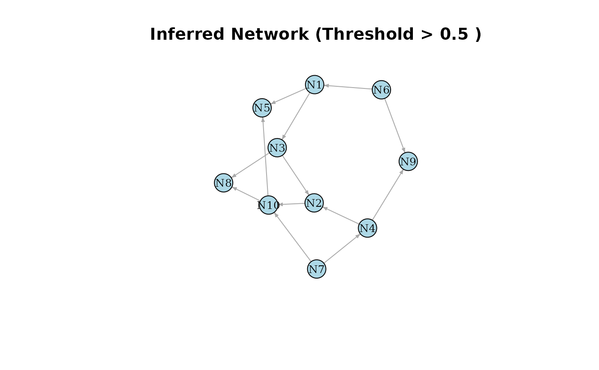
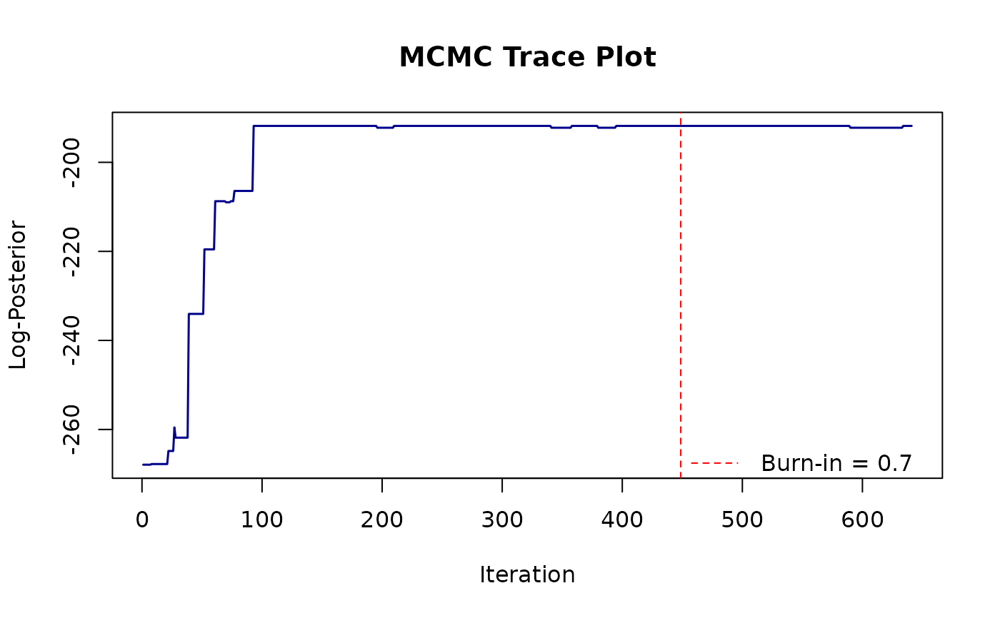

Executes a Metropolis-within-Gibbs Markov chain Monte Carlo (MCMC) algorithm to sample from the joint posterior distribution of Directed Acyclic Graph (DAG) topologies (\(T\)) and Boolean logic transition functions (\(F\)). The algorithm iterates through individual network nodes and proposes parent set mutations (edge additions, removals, or swaps) paired with transition function reassignments to one of 14 candidate Boolean rules (stored as codes 1-12 in the transition matrix). Proposed states transitions are strictly verified to follow the DAG constraint and evaluated with a Metropolis-Hastings acceptance threshold using log-posterior values.
Arguments
- GeneData
A binary empirical observation matrix (\(G\)), where rows represent individual network nodes (genes) and columns represent independent samples or sequential time points.
- num.node
An integer representing the total number of network nodes. Defaults to
nrow(GeneData)if not specified.)- SampleSize
An integer representing the total number of time points or independent samples in the dataset. Defaults to
ncol(GeneData)if not specified.- prior_para
A matrix (with dimensions
(num.node + 1) x 2) of Beta prior hyperparameters \(\alpha\) and \(\beta\) for root node probabilities and the global noise parameter \(e\). Defaults to a flat prior if not specified.- num_update
An integer representing the total number of MCMC iterations to perform. Defaults to 4000 if not specified.
- penalty
Structural-prior hyperparameter in \((0, 1]\). A value of
1corresponds to a uniform prior over valid network topologies; values below1apply an edge-count penalty that favors sparser networks. Defaults to 0.1 if not specified.- prop.ratio
A numeric value between 0 and 1 giving the final probability of using the empirical proposal distribution after the first 10% of outer iterations. During the first 10% of outer iterations, the empirical proposal is used with probability 0.9. Defaults to 0.1.
- verbose
Logical. If TRUE, prints verbose MCMC iteration progress to the console. Default is FALSE.
- timeseries
Logical. If TRUE, the algorithm assumes a time-series dataset. If FALSE, the algorithm assumes independent samples. Default is TRUE.
- burn_in
A numeric value between 0 and 1 representing the proportion of initial MCMC samples to discard as burn-in. Defaults to 0.7 if not specified.
Value
A list containing the full trajectory of the MCMC chain. Specifically, networks (a list of sampled transition function matrices) and log_posterior (a numeric vector of log-posterior scores for each iteration). These represent samples drawn from the marginal posterior distribution \(P(T,F|G)\) used for Bayesian model averaging. Additionally, the post_edge_prob (matrix of marginal posterior edge probabilities) and burn_in ratio are returned in the list.
Details
Posterior edge probabilities (post_edge_prob) are computed from one
thinned sample per outer iteration (a full Gibbs sweep) after discarding
burn_in, as designed in the original method paper.
Examples
# 1. Define network parameters
set.seed(235)
num_nodes <- 8
sample_size <- 50
# 2. Generate true network and simulate data
true_network <- GenerateNetwork(num.node = num_nodes)
# Set up Beta priors for root-node probabilities and the noise rate
prior_para <- matrix(3, nrow = num_nodes + 1, ncol = 2)
prior_para[num_nodes + 1, 1] <- 2
prior_para[num_nodes + 1, 2] <- 100
# Simulate parameters
para <- numeric(num_nodes + 1)
for (i in 1:(num_nodes + 1)) {
para[i] <- stats::rbeta(1, prior_para[i, 1], prior_para[i, 2])
}
para[num_nodes + 1] <- 0.1 # Fixed noise rate for simulation
error_matrix <- matrix(stats::rbinom(num_nodes * sample_size, 1, para[num_nodes + 1]),
nrow = num_nodes, ncol = sample_size
)
dummy_data <- GenerateSample(
trans_matrix = true_network,
SampleSize = sample_size,
para = para,
error = error_matrix
)
# 3. Run the MCMC sampler (silently)
mcmc_results <- run_bbni(
GeneData = dummy_data,
prior_para = prior_para,
num_update = 80, # Scaled down for example speed
prop.ratio = 0.1
)
# 4. Visualize results
plot_bbni(mcmc_results, true_network = true_network, threshold = 0.5)

plot_trace(mcmc_results)
